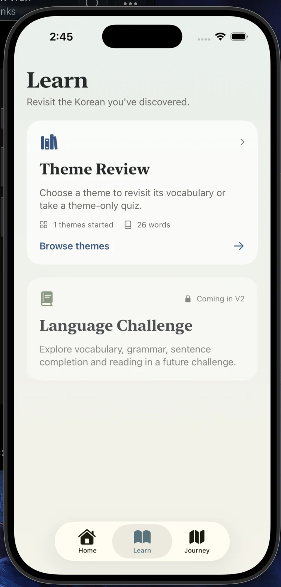
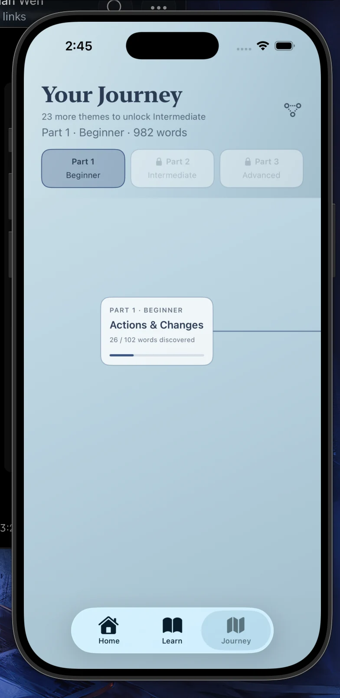
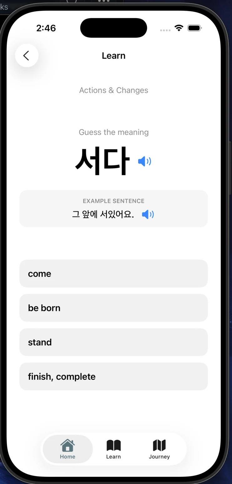
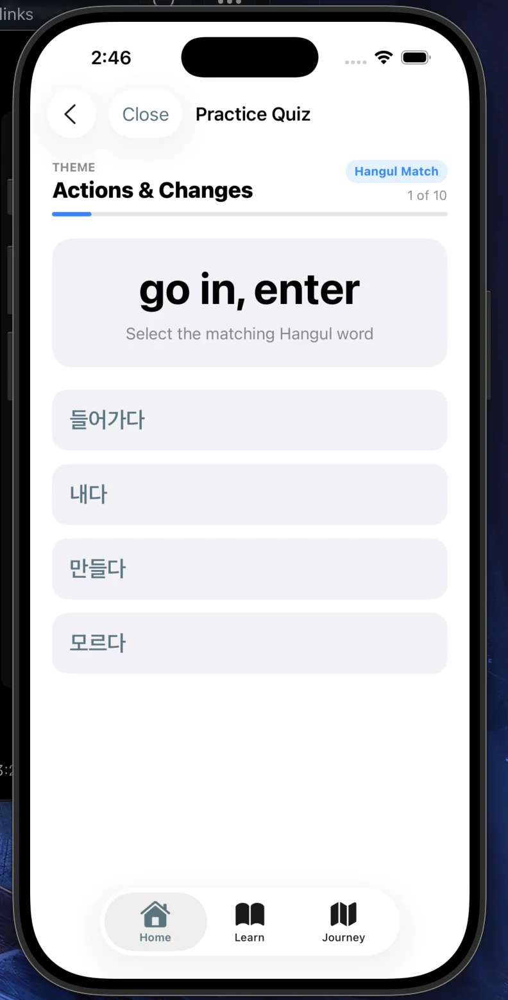
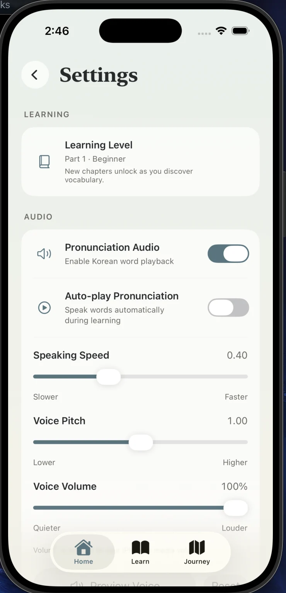
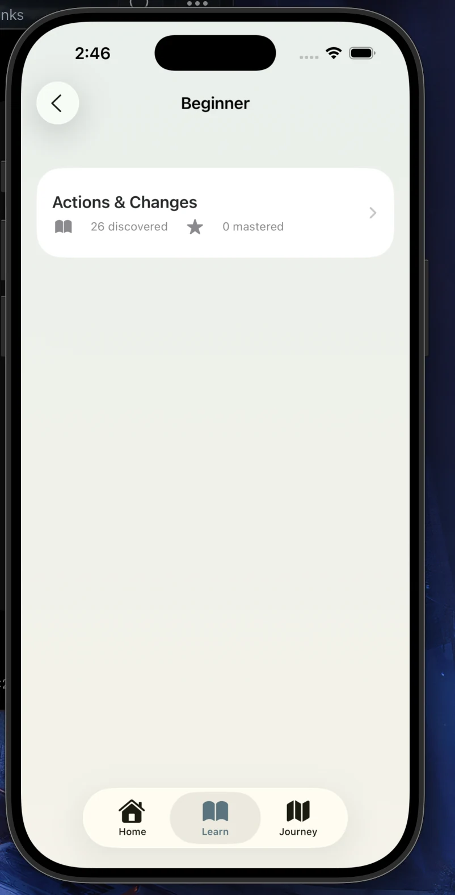

Haru 하루
A calmer way to build Korean vocabulary, one word at a time.
Haru · 하루
Learn Korean at your own pace.
Thoughtful vocabulary practice, a themed learning journey, and a calmer way to keep discovering new words.

/ Project Overview
Haru is an independently developed Korean vocabulary learning application built in SwiftUI. It explores how a language-learning experience can feel approachable and self-directed without relying on streak pressure or competitive gamification. Learners explore themed vocabulary, practise recall through quizzes and revisit words as their knowledge grows.
/ Core Features
Themed learning journey
Explore Korean vocabulary in structured themes through a Seoul-inspired journey interface.
Vocabulary and quizzes
Discover words, practise Hangul recognition and review previously learned vocabulary.
Korean pronunciation
On-device text-to-speech helps learners hear Korean words and examples.
Progress at your own pace
Track introduced and mastered vocabulary without streaks or leaderboards.
/ Technical Implementation
Technology stack
Swift · SwiftUI · Supabase · AVFoundation · WidgetKit · Git / GitHub
Architecture and design
Supabase-backed vocabulary data, locally persisted learning progress, shared state for learning and review, and time-of-day visual themes. iOS widget functionality is still being refined.
/ Interface Gallery
Screenshots from the native SwiftUI prototype. Select an image to view it at full size.
The welcoming home dashboard and current learning stage.

Review themes or browse new learning activities.

Track vocabulary discovery through themed chapters.

Learn Hangul with sentence examples and pronunciation.

Reinforce vocabulary through interactive matching questions.

Personalise Korean pronunciation speed, pitch and volume.

See discovered and mastered words for each theme.
/ Development Status
The original iOS implementation is available as source code. A browser-accessible version is now available so visitors can try Haru without installing an iOS development build. The web adaptation is designed primarily for mobile browsers.
/ Web Demo & Acknowledgements
Haru was originally developed as a native iOS app using SwiftUI. The browser version was adapted with assistance from Claude by Anthropic and is deployed using Cloudflare Pages, connected to a private GitHub repository for version control and automatic deployments.
The web experience is primarily optimised for mobile browsers. Visitors can save progress locally in their browser or explore without saving. Locally saved progress is specific to that browser and device.
Vocabulary data sourced from FoldAlpha TOPIK Vocabulary.